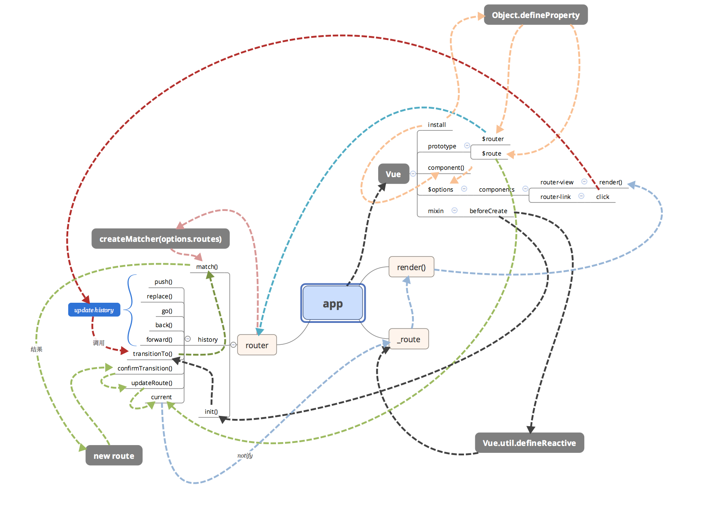

路由
原理
hash模式
2014年之前，通过hash来实现路由：1
http://www.xxx.com/#/login
这种#/loginhash值的变化，不会导致浏览器向服务器发出请求，所以不会刷新页面。hash值的变化，会触发hashchange这个事件，通过这个事件我们就可以知道hash值发生了哪些变化。然后我们可以监听hashchange来实现更新页面部分内容的操作。
history模式
2014年后，因为 HTML5 标准发布。多了pushState、popState、replaceState，可以改变 url 地址且不会发送请求。通过这些就能用另一种方式来实现前端路由了，但原理都是跟 hash 实现相同的。用了 HTML5 的实现，单页路由的 url 就不会多出一个#，变得更加美观。但因为没有 # 号，所以当用户刷新页面之类的操作时，浏览器还是会给服务器发送请求。为了避免出现这种情况，所以这个实现需要服务器的支持，需要把所有路由都重定向到根页面。
vue-router示意图

发现错误？想参与编辑？
在 GitHub 上编辑此页！
更新于：2018-09-13 14:09:20